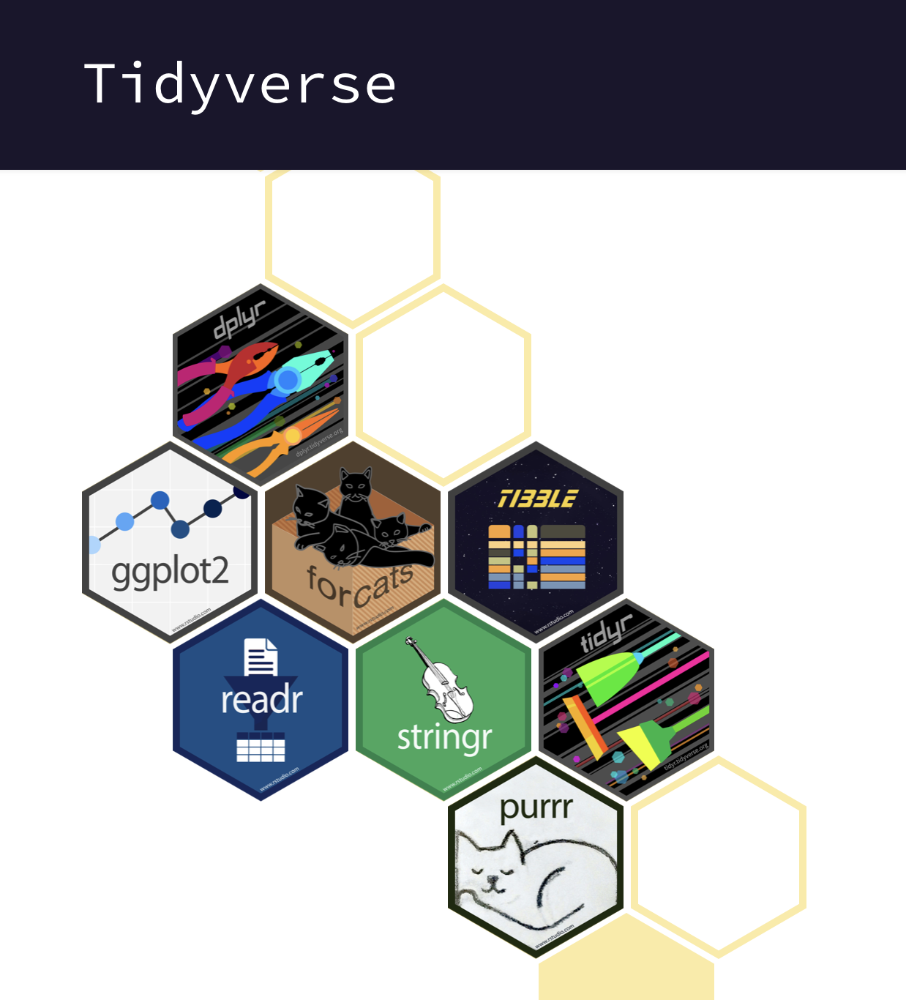
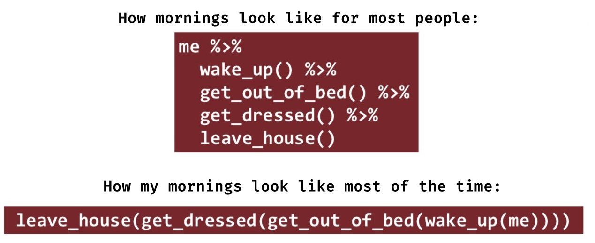
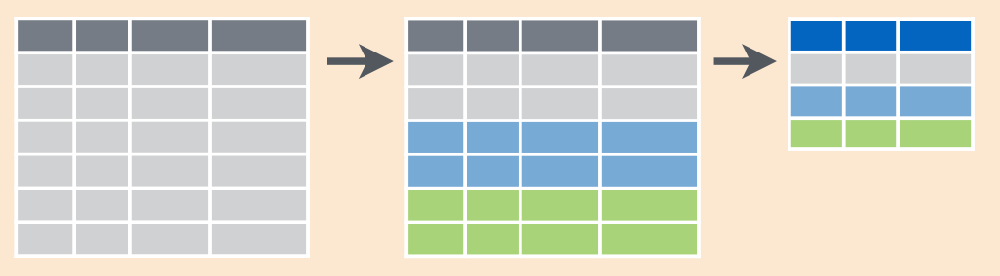
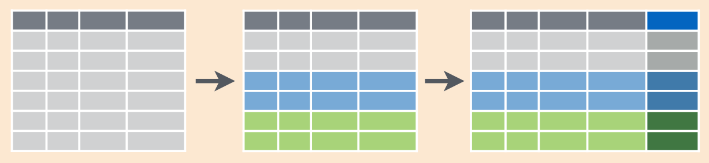

![]()
{kind=link}
install.packages("tidyverse")10 Введение в tidyverse
10.1 Вселенная tidyverse
Тайдиверс (tidyverse) - это не один, а целое множество пакетов, объединенных общей философией, грамматикой и структурами данных. Пакеты tidyverse можно разделить на две группы: основные пакеты, составляющие ядро tidyverse, и дополнительные пакеты.
- Основные пакеты, которые составляют ядро tidyverse. Сам по себе пакет
{tidyverse}– это пакет для подключения и обновления основных пакетов tidyverse. Короче говоря,{tidyverse}– это такой пакет с пакетами.
Давайте сначала установим пакет {tidyverse}, если он у вас еще не установлен.
Установка может занять довольно большое время: у вас установятся как основные пакеты tidyverse, так и огромное количество зависимостей – других пакетов, которые используются основными пакетами tidyverse. Зато при работе с новыми для себя пакетами вы приятно удивитесь тому, как много нужных вам пакетов уже установлено!
Все пакеты tidyverse, включая, конечно, основные пакеты, объединены tidy философией и взаимосовместимым синтаксисом. Это означает, что во многих случаях даже не нужно думать о том, из какого именно пакета tidyverse пришла функция. Можно просто подключить один пакет – пакет {tidyverse}.
library(tidyverse)── Attaching core tidyverse packages ──────────────────────── tidyverse 2.0.0 ──
✔ dplyr 1.2.1 ✔ readr 2.2.0
✔ forcats 1.0.1 ✔ stringr 1.6.0
✔ ggplot2 4.0.3 ✔ tibble 3.3.1
✔ lubridate 1.9.5 ✔ tidyr 1.3.2
✔ purrr 1.2.2
── Conflicts ────────────────────────────────────────── tidyverse_conflicts() ──
✖ dplyr::filter() masks stats::filter()
✖ dplyr::lag() masks stats::lag()
ℹ Use the conflicted package (<http://conflicted.r-lib.org/>) to force all conflicts to become errorsПодключение пакета {tidyverse} автоматически приводит к подключению основных пакетов tidyverse, дополнительные пакеты нужно подключать дополнительно при необходимости.
Все эти пакеты написаны Хэдли Уикхэмом — пожалуй, самым значимым человеком в мире R на сегодняшний день. Вот эти пакеты:
{dplyr}– для преобразования данных, основной пакет всего тайдиверс,{tidyr}– для приведения данных к чистому виду (tidy data),{tibble}– для работы с тибблами, продвинутый вариант датафрейма,{purrr}– для функционального программирования (замена семейства функцийapply(); см. Глава 8.6.1),{readr}– для чтения таблиц в текстовом виде, замена стандартным функциям семействаread.table(),{ggplot2}– для визуализации данных с использованием Grammar of Graphics (Глава 14),{stringr}– для работы со строковыми переменными,{forcats}– для работы с переменными-факторами.

В 2023 году в ядро tidyverse добавили ещё один пакет, который, правда, является одним из самых старых пакетов Хэдли Уикхэма:
{lubridate}– для работы с датами и временем.- Дополнительные пакеты tidyverse: они не подключаются при вызове
library(tidyverse), но они также разделяют подход tidyverse, дополняя и развивая его. Определить границы “расширенного” tidyverse очень сложно. Во-первых, есть еще много других небольших пакетов от команды tidyverse, которые тоже считаются частью tidyverse. Во-вторых, кроме официальных пакетов от команды tidyverse есть множество пакетов от других разработчиков, которые пытаются соответствовать принципам tidyverse и дополняют их.
- Дополнительные пакеты tidyverse: они не подключаются при вызове
ПредупреждениеДля продвинутых: Расширенная Вселенная tidyverse
Вселенная “расширенного” tidyverse необъятна. Перечислить все пакеты не представляется возможным, но можно выделить отдельные группы пакетов.
- Пакеты для импорта и экспорта данных, работы с базами данных:
{vroom}– для быстрой загрузки таблиц в текстовом виде,{readxl}– для чтения файлов Microsoft Excel,{jsonlite}– для работы с JSON,{xml2}– для работы с XML,{DBI}и{dbplyr}– для работы с базами данных,{rvest}– для веб-скреппинга,{feather}– для быстрого чтения и записи данных формата feather,{googledrive}– для взаимодействия с файлами на Google-диске,{googlesheets4}– для импорта и экспорта Google-таблиц.
Пакеты для разработки пакетов:
{rlang},{cli},{crayon},{rstudioapi},{pillar}.{tidymodels}– еще один “пакет с пакетами”, который позволяет подключать другие пакеты для моделирования и машинного обучения. Включает в себя пакеты{rsample},{parsnip},{recipes},{tune},{yardstick}.
Еще несколько важных пакетов из расширенного tidyverse:
{blob}– для работы с большими бинарными объектами (binary large object; BLOB),{reprex}– для создания воспроизводимых примеров (reproducible examples) – чтобы при написании вопросов в R чатах, stackoverflow, issues на гитхабе описывать проблему таким образом, чтобы отвечающие могли воспроизвести вашу проблему у себя.{glue}– для продвинутого объединения строк (аналог F-строк в Python),{tidytext}– для работы с текстами и корпусами,{magrittr}– с несколькими вариантами (%>%) пайп-оператора (Глава 10.4),{dtplyr}– для ускорения{dplyr}за счёт перевода синтаксиса на более быстрый{data.table}(Глава 9.1).
10.2 Загрузка данных с помощью readr
Стандартной функцией для чтения .csv файлов в R является функция read.csv(), но мы будем использовать функцию read_csv() из пакета {readr}. Синтаксис функции read_csv() очень похож на read.csv(): первым аргументом является путь к файлу (в том числе можно использовать URL), некоторые остальные параметры тоже совпадают.
heroes <- read_csv("https://raw.githubusercontent.com/Pozdniakov/tidy_stats/master/data/heroes_information.csv",
na = c("-", "-99", "NA"))New names:
• `` -> `...1`Warning: One or more parsing issues, call `problems()` on your data frame for details,
e.g.:
dat <- vroom(...)
problems(dat)Rows: 734 Columns: 11
── Column specification ────────────────────────────────────────────────────────
Delimiter: ","
chr (8): name, Gender, Eye color, Race, Hair color, Publisher, Skin color, A...
dbl (3): ...1, Height, Weight
ℹ Use `spec()` to retrieve the full column specification for this data.
ℹ Specify the column types or set `show_col_types = FALSE` to quiet this message.Подробнее про импорт данных, в том числе в tidyverse, смотри в Глава 6.
10.3 tibble
Когда мы загрузили данные с помощью read_csv(), то мы получили объект класса {tibble}, а не data.frame:
class(heroes)[1] "spec_tbl_df" "tbl_df" "tbl" "data.frame" Тиббл ({tibble}) - это такой “усовершенствованный” data.frame. Почти всё, что работает с data.frame, работает и с тибблами. Однако у тибблов есть свои дополнительные фишки. Самая очевидная из них - более аккуратный вывод в консоль:
heroes# A tibble: 734 × 11
...1 name Gender `Eye color` Race `Hair color` Height Publisher
<dbl> <chr> <chr> <chr> <chr> <chr> <dbl> <chr>
1 0 A-Bomb Male yellow Human No Hair 203 Marvel C…
2 1 Abe Sapien Male blue Icthyo … No Hair 191 Dark Hor…
3 2 Abin Sur Male blue Ungaran No Hair 185 DC Comics
4 3 Abomination Male green Human /… No Hair 203 Marvel C…
5 4 Abraxas Male blue Cosmic … Black NA Marvel C…
6 5 Absorbing Man Male blue Human No Hair 193 Marvel C…
7 6 Adam Monroe Male blue <NA> Blond NA NBC - He…
8 7 Adam Strange Male blue Human Blond 185 DC Comics
9 8 Agent 13 Female blue <NA> Blond 173 Marvel C…
10 9 Agent Bob Male brown Human Brown 178 Marvel C…
# ℹ 724 more rows
# ℹ 3 more variables: `Skin color` <chr>, Alignment <chr>, Weight <dbl>Выводятся только первые 10 строк, если какие-то колонки не влезают на экран, то они просто перечислены внизу. Ну а тип данных написан прямо под названием колонки.
Функции различных пакетов tidyverse сами конвертируют в тиббл при необходимости. Если же нужно это сделать самостоятельно, то можно это сделать так:
heroes_df <- as.data.frame(heroes) #создаем простой датафрейм
class(heroes_df)[1] "data.frame"as_tibble(heroes_df) #превращаем обратно в тиббл# A tibble: 734 × 11
...1 name Gender `Eye color` Race `Hair color` Height Publisher
<dbl> <chr> <chr> <chr> <chr> <chr> <dbl> <chr>
1 0 A-Bomb Male yellow Human No Hair 203 Marvel C…
2 1 Abe Sapien Male blue Icthyo … No Hair 191 Dark Hor…
3 2 Abin Sur Male blue Ungaran No Hair 185 DC Comics
4 3 Abomination Male green Human /… No Hair 203 Marvel C…
5 4 Abraxas Male blue Cosmic … Black NA Marvel C…
6 5 Absorbing Man Male blue Human No Hair 193 Marvel C…
7 6 Adam Monroe Male blue <NA> Blond NA NBC - He…
8 7 Adam Strange Male blue Human Blond 185 DC Comics
9 8 Agent 13 Female blue <NA> Blond 173 Marvel C…
10 9 Agent Bob Male brown Human Brown 178 Marvel C…
# ℹ 724 more rows
# ℹ 3 more variables: `Skin color` <chr>, Alignment <chr>, Weight <dbl>В дальнейшем мы будем работать только с tidyverse, а это значит, что только с тибблами, а не обычными датафреймами. Тем не менее, тибблы и датафреймы будут в дальнейшем использоваться как синонимы.
Можно создавать тибблы вручную с помощью функции tibble(), которая работает аналогично функции data.frame():
tibble(
a = 1:3,
b = letters[1:3]
)# A tibble: 3 × 2
a b
<int> <chr>
1 1 a
2 2 b
3 3 c 10.4 Пайпы: magrittr::%>% и встроенный |>
Мы уже привыкли к использованию векторизованных функций, работая в базовом R. Они позволяют нам делать сложные операции с целыми векторами без каких-либо циклов, просто передавая результат выполнения функций в качестве аргумента для других функций:
sum(log(abs(sin(sqrt(1:20)))))[1] -14.08595С одной стороны, это довольно лаконично и элегантно, с другой стороны, читается такой код с некоторым трудом: нам нужно найти где-то внутри начало операции (создание числового вектора 1:20), а затем читать изнутри наружу, чтобы понять порядок действий.
Оператор %>% из пакета {magrittr}1 позволяет переписать этот же код в более естественном для чтения порядке:
1:20 %>% sqrt() %>% sin() %>% abs() %>% log() %>% sum()[1] -14.08595Здесь код читается последовательно слева направо. Или же даже можно сделать порядок “сверху вниз”:
1:20 %>%
sqrt() %>%
sin() %>%
abs() %>%
log() %>%
sum()[1] -14.08595
ОсторожностьВремя мемов

Оператор %>% называется “пайпом” (pipe), т.е. “трубой”. Он означает, что следующая функция (справа от пайпа) принимает на вход в качестве первого аргумента результат выполнения предыдущей функции (той, что слева). Фактически, это примерно то же самое, что и вставлять результат выполнения функции в качестве первого аргумента в другую функцию. Просто выглядит это красивее и читабельнее. Как будто данные пропускаются через трубы функций или конвейерную ленту на заводе, если хотите. А то, что первый параметр функции — это почти всегда данные, работает нам здесь на руку.
В редких случаях нам нужно передать результат выполнения команды слева от пайпа не на первую позицию внутри функции. В этих случаях используется “плейсхолдер” (placeholder), который выглядит как простая точка: ., которую вы ставите туда, куда хотите передать результат выполнения команды слева от пайпа:
1:20 %>%
sqrt() %>%
sin() %>%
abs() %>%
log(2, base = .) %>%
sum()[1] -178.9075В этом случае логарифм будет посчитан для числа 2 с различными основаниями, которые были посчитаны до соответствующего пайпа.
10.4.1 Пайпы и tidyverse
Пайпы оказались невероятно удобным дополнением для функций tidyverse. Основные функции tidyverse предполагают работу с тибблами: первый аргумент — тиббл, последующие аргументы настраивают функции, на выходе из функции мы получаем изменённый тиббл. Этот тиббл “пробрасывается” по функциям, а написание кода превращается в итеративное и интерактивное “дописывание” пайпов с новой функцией снизу.
Впрочем, пайпы могут встретиться и внутри функций tidyverse, а не только между ними, так как пайпы удачно встраиваются в работу с векторами, матрицами и списками. Неудивительно, что пайпы стали популярны и за пределами tidyverse тоже.
10.4.2 Нативный пайп |>
В R 4.1.0 (май 2021) появились встроенные пайпы, которые уже не требуют подключения никаких дополнительных пакетов. Смысл этих пайпов тот же самый, но выглядят они немного по-другому: сам нативный пайп пишется |> (вместо %>% из {magrittr}), а плейсхолдер — _ (вместо . в {magrittr}):
1:20 |>
sqrt() |>
sin() |>
abs() |>
log(2, base = _) |>
sum()[1] -178.9075Пока что в этой книге используются старые пайпы из {magrittr} (%>%): код с новыми пайпами (|>) не будет работать в более старых версиях R. В какой-то момент нативные пайпы (|>), скорее всего, полностью вытеснят пайпы из {magrittr} (%>%), в том числе и в самом tidyverse (см. раздел «The pipe» статьи «A personal history of the tidyverse» (Wickham, 2025)). Более подробную историю появления и развития пайпов в R можно прочитать в статье Адольфо Альвареза (Plumbers, chains, and famous painters: The (updated) history of the pipe operator in R).
Важно понимать, что пайп не даёт какой-то дополнительной функциональности или дополнительной скорости работы2. Он создан исключительно для читабельности и комфорта.
10.5 Главные пакеты tidyverse: dplyr и tidyr
{dplyr}3 — это самая основа всего tidyverse. Этот пакет предоставляет основные функции для манипуляции с тибблами. Пакет {dplyr} является наследником и более усовершенствованной версией {plyr}, так что если увидите использование пакета {plyr}, то, скорее всего, скрипт был написан очень давно.
Пакет {tidyr} дополняет {dplyr}, предоставляя полезные функции для тайдификации тибблов. Тайдификация (“аккуратизация”) данных означает приведение табличных данных к такому формату, в котором:
- Каждая переменная имеет собственный столбец
- Каждое наблюдение имеет собственную строку
- Каждое значение имеет свою собственную ячейку
Впрочем, многие функции {dplyr} часто используются при тайдификации, так же, как и многие функции {tidyr} имеют применение вне тайдификации. В общем, функционал этих двух пакетов несколько смешался, поэтому мы будем рассматривать их вместе. А чтобы представлять, какая функция относится к какому пакету (хотя запоминать это необязательно), я буду использовать запись с двумя двоеточиями ::, которая обычно применяется для вызова функции без подгрузки всего пакета, при первом упоминании функции.
Пакет {tidyr} — это более усовершенствованная версия пакета reshape2, который в свою очередь является усовершенствованной версией reshape. По аналогии с {plyr}, если вы видите использование этих пакетов, то это указывает на то, что перед вами морально устаревший код.
Код с использованием {dplyr} и {tidyr} сильно непохож на то, что мы видели раньше. Большинство функций {dplyr} и {tidyr} работают с целым тибблом сразу, принимая его в качестве первого аргумента и возвращая измененный тиббл. Это позволяет превратить весь код в последовательный набор применяемых функций, соединенный пайпами. На практике это выглядит очень элегантно, и вы в этом скоро убедитесь.
10.6 Работа с колонками тиббла
10.6.1 Выбор колонок: dplyr::select()
Функция dplyr::select() позволяет выбирать колонки по номеру или имени (кавычки не нужны).
heroes %>%
select(1,5)# A tibble: 734 × 2
...1 Race
<dbl> <chr>
1 0 Human
2 1 Icthyo Sapien
3 2 Ungaran
4 3 Human / Radiation
5 4 Cosmic Entity
6 5 Human
7 6 <NA>
8 7 Human
9 8 <NA>
10 9 Human
# ℹ 724 more rowsheroes %>%
select(name, Race, Publisher, `Hair color`)# A tibble: 734 × 4
name Race Publisher `Hair color`
<chr> <chr> <chr> <chr>
1 A-Bomb Human Marvel Comics No Hair
2 Abe Sapien Icthyo Sapien Dark Horse Comics No Hair
3 Abin Sur Ungaran DC Comics No Hair
4 Abomination Human / Radiation Marvel Comics No Hair
5 Abraxas Cosmic Entity Marvel Comics Black
6 Absorbing Man Human Marvel Comics No Hair
7 Adam Monroe <NA> NBC - Heroes Blond
8 Adam Strange Human DC Comics Blond
9 Agent 13 <NA> Marvel Comics Blond
10 Agent Bob Human Marvel Comics Brown
# ℹ 724 more rowsОбратите внимание, если в названии колонки присутствует пробел или, например, колонка начинается с цифры или точки и цифры, то это синтаксически невалидное имя (Глава 2.6). Это не значит, что такие названия колонок недопустимы. Но такие названия колонок нужно обособлять ` грависом (правый штрих, на клавиатуре находится там же где и буква ё и ~).
Еще обратите внимание на то, что функции tidyverse не изменяют сами изначальные тибблы/датафреймы. Это означает, что если вы хотите полученный результат сохранить, то нужно добавить присвоение:
heroes_some_cols <- heroes %>%
select(name, Race, Publisher, `Hair color`)
heroes_some_cols# A tibble: 734 × 4
name Race Publisher `Hair color`
<chr> <chr> <chr> <chr>
1 A-Bomb Human Marvel Comics No Hair
2 Abe Sapien Icthyo Sapien Dark Horse Comics No Hair
3 Abin Sur Ungaran DC Comics No Hair
4 Abomination Human / Radiation Marvel Comics No Hair
5 Abraxas Cosmic Entity Marvel Comics Black
6 Absorbing Man Human Marvel Comics No Hair
7 Adam Monroe <NA> NBC - Heroes Blond
8 Adam Strange Human DC Comics Blond
9 Agent 13 <NA> Marvel Comics Blond
10 Agent Bob Human Marvel Comics Brown
# ℹ 724 more rows10.6.2 Мини-язык tidy selection для выбора колонок
Для выбора столбцов (не только в select(), но и для других функций tidyverse) используется специальный мини-язык tidy selection из пакета {tidyselect}4. Tidy selection даёт очень широкие возможности для выбора колонок.
Можно использовать оператор : для выбора нескольких соседних колонок (по аналогии с созданием числового вектора с шагом 1).
heroes %>%
select(name:Publisher)# A tibble: 734 × 7
name Gender `Eye color` Race `Hair color` Height Publisher
<chr> <chr> <chr> <chr> <chr> <dbl> <chr>
1 A-Bomb Male yellow Human No Hair 203 Marvel C…
2 Abe Sapien Male blue Icthyo Sapien No Hair 191 Dark Hor…
3 Abin Sur Male blue Ungaran No Hair 185 DC Comics
4 Abomination Male green Human / Radia… No Hair 203 Marvel C…
5 Abraxas Male blue Cosmic Entity Black NA Marvel C…
6 Absorbing Man Male blue Human No Hair 193 Marvel C…
7 Adam Monroe Male blue <NA> Blond NA NBC - He…
8 Adam Strange Male blue Human Blond 185 DC Comics
9 Agent 13 Female blue <NA> Blond 173 Marvel C…
10 Agent Bob Male brown Human Brown 178 Marvel C…
# ℹ 724 more rowsheroes %>%
select(name:`Eye color`, Publisher:Weight)# A tibble: 734 × 7
name Gender `Eye color` Publisher `Skin color` Alignment Weight
<chr> <chr> <chr> <chr> <chr> <chr> <dbl>
1 A-Bomb Male yellow Marvel Comics <NA> good 441
2 Abe Sapien Male blue Dark Horse Co… blue good 65
3 Abin Sur Male blue DC Comics red good 90
4 Abomination Male green Marvel Comics <NA> bad 441
5 Abraxas Male blue Marvel Comics <NA> bad NA
6 Absorbing Man Male blue Marvel Comics <NA> bad 122
7 Adam Monroe Male blue NBC - Heroes <NA> good NA
8 Adam Strange Male blue DC Comics <NA> good 88
9 Agent 13 Female blue Marvel Comics <NA> good 61
10 Agent Bob Male brown Marvel Comics <NA> good 81
# ℹ 724 more rowsИспользуя ! можно вырезать ненужные колонки.
heroes %>%
select(!...1)# A tibble: 734 × 10
name Gender `Eye color` Race `Hair color` Height Publisher `Skin color`
<chr> <chr> <chr> <chr> <chr> <dbl> <chr> <chr>
1 A-Bomb Male yellow Human No Hair 203 Marvel C… <NA>
2 Abe Sapi… Male blue Icth… No Hair 191 Dark Hor… blue
3 Abin Sur Male blue Unga… No Hair 185 DC Comics red
4 Abominat… Male green Huma… No Hair 203 Marvel C… <NA>
5 Abraxas Male blue Cosm… Black NA Marvel C… <NA>
6 Absorbin… Male blue Human No Hair 193 Marvel C… <NA>
7 Adam Mon… Male blue <NA> Blond NA NBC - He… <NA>
8 Adam Str… Male blue Human Blond 185 DC Comics <NA>
9 Agent 13 Female blue <NA> Blond 173 Marvel C… <NA>
10 Agent Bob Male brown Human Brown 178 Marvel C… <NA>
# ℹ 724 more rows
# ℹ 2 more variables: Alignment <chr>, Weight <dbl>heroes %>%
select(!Gender:Height)# A tibble: 734 × 6
...1 name Publisher `Skin color` Alignment Weight
<dbl> <chr> <chr> <chr> <chr> <dbl>
1 0 A-Bomb Marvel Comics <NA> good 441
2 1 Abe Sapien Dark Horse Comics blue good 65
3 2 Abin Sur DC Comics red good 90
4 3 Abomination Marvel Comics <NA> bad 441
5 4 Abraxas Marvel Comics <NA> bad NA
6 5 Absorbing Man Marvel Comics <NA> bad 122
7 6 Adam Monroe NBC - Heroes <NA> good NA
8 7 Adam Strange DC Comics <NA> good 88
9 8 Agent 13 Marvel Comics <NA> good 61
10 9 Agent Bob Marvel Comics <NA> good 81
# ℹ 724 more rowsДругие известные нам логические операторы (& и |) тоже работают в tidy selection.
В дополнение к логическим операторам и :, в tidy selection есть набор вспомогательных функций, работающих исключительно в контексте выбора колонок.
Вспомогательная функция last_col() позволит обратиться к последней колонке тиббла:
heroes %>%
select(name:last_col())# A tibble: 734 × 10
name Gender `Eye color` Race `Hair color` Height Publisher `Skin color`
<chr> <chr> <chr> <chr> <chr> <dbl> <chr> <chr>
1 A-Bomb Male yellow Human No Hair 203 Marvel C… <NA>
2 Abe Sapi… Male blue Icth… No Hair 191 Dark Hor… blue
3 Abin Sur Male blue Unga… No Hair 185 DC Comics red
4 Abominat… Male green Huma… No Hair 203 Marvel C… <NA>
5 Abraxas Male blue Cosm… Black NA Marvel C… <NA>
6 Absorbin… Male blue Human No Hair 193 Marvel C… <NA>
7 Adam Mon… Male blue <NA> Blond NA NBC - He… <NA>
8 Adam Str… Male blue Human Blond 185 DC Comics <NA>
9 Agent 13 Female blue <NA> Blond 173 Marvel C… <NA>
10 Agent Bob Male brown Human Brown 178 Marvel C… <NA>
# ℹ 724 more rows
# ℹ 2 more variables: Alignment <chr>, Weight <dbl>А функция everything() позволяет выбрать все колонки.
heroes %>%
select(everything())# A tibble: 734 × 11
...1 name Gender `Eye color` Race `Hair color` Height Publisher
<dbl> <chr> <chr> <chr> <chr> <chr> <dbl> <chr>
1 0 A-Bomb Male yellow Human No Hair 203 Marvel C…
2 1 Abe Sapien Male blue Icthyo … No Hair 191 Dark Hor…
3 2 Abin Sur Male blue Ungaran No Hair 185 DC Comics
4 3 Abomination Male green Human /… No Hair 203 Marvel C…
5 4 Abraxas Male blue Cosmic … Black NA Marvel C…
6 5 Absorbing Man Male blue Human No Hair 193 Marvel C…
7 6 Adam Monroe Male blue <NA> Blond NA NBC - He…
8 7 Adam Strange Male blue Human Blond 185 DC Comics
9 8 Agent 13 Female blue <NA> Blond 173 Marvel C…
10 9 Agent Bob Male brown Human Brown 178 Marvel C…
# ℹ 724 more rows
# ℹ 3 more variables: `Skin color` <chr>, Alignment <chr>, Weight <dbl>При этом everything() не будет дублировать выбранные колонки, поэтому можно использовать everything() для перестановки колонок в тиббле:
heroes %>%
select(name, Publisher, everything())# A tibble: 734 × 11
name Publisher ...1 Gender `Eye color` Race `Hair color` Height
<chr> <chr> <dbl> <chr> <chr> <chr> <chr> <dbl>
1 A-Bomb Marvel Comi… 0 Male yellow Human No Hair 203
2 Abe Sapien Dark Horse … 1 Male blue Icth… No Hair 191
3 Abin Sur DC Comics 2 Male blue Unga… No Hair 185
4 Abomination Marvel Comi… 3 Male green Huma… No Hair 203
5 Abraxas Marvel Comi… 4 Male blue Cosm… Black NA
6 Absorbing Man Marvel Comi… 5 Male blue Human No Hair 193
7 Adam Monroe NBC - Heroes 6 Male blue <NA> Blond NA
8 Adam Strange DC Comics 7 Male blue Human Blond 185
9 Agent 13 Marvel Comi… 8 Female blue <NA> Blond 173
10 Agent Bob Marvel Comi… 9 Male brown Human Brown 178
# ℹ 724 more rows
# ℹ 3 more variables: `Skin color` <chr>, Alignment <chr>, Weight <dbl>Впрочем, для перестановки колонок удобнее использовать специальную функцию relocate() (Глава 10.6.4). Можно даже выбирать колонки по паттернам в названиях. Например, с помощью ends_with() можно выбрать все колонки, заканчивающиеся одинаковым суффиксом:
heroes %>%
select(ends_with("color"))# A tibble: 734 × 3
`Eye color` `Hair color` `Skin color`
<chr> <chr> <chr>
1 yellow No Hair <NA>
2 blue No Hair blue
3 blue No Hair red
4 green No Hair <NA>
5 blue Black <NA>
6 blue No Hair <NA>
7 blue Blond <NA>
8 blue Blond <NA>
9 blue Blond <NA>
10 brown Brown <NA>
# ℹ 724 more rowsАналогично, с помощью функции starts_with() можно найти колонки с одинаковым префиксом, с помощью contains() — все колонки с выбранным паттерном в любой части названия колонки5.
heroes %>%
select(starts_with("Eye") & ends_with("color"))# A tibble: 734 × 1
`Eye color`
<chr>
1 yellow
2 blue
3 blue
4 green
5 blue
6 blue
7 blue
8 blue
9 blue
10 brown
# ℹ 724 more rowsheroes %>%
select(contains("eight"))# A tibble: 734 × 2
Height Weight
<dbl> <dbl>
1 203 441
2 191 65
3 185 90
4 203 441
5 NA NA
6 193 122
7 NA NA
8 185 88
9 173 61
10 178 81
# ℹ 724 more rowsНу и наконец, можно выбирать по содержимому колонок с помощью where(). Это напоминает применение sapply()(Глава 8.6.3) на датафрейме для индексирования колонок: в качестве аргумента для where принимается функция, которая применяется для каждой из колонок, после чего выбираются только те колонки, для которых было получено TRUE.
heroes %>%
select(where(is.numeric))# A tibble: 734 × 3
...1 Height Weight
<dbl> <dbl> <dbl>
1 0 203 441
2 1 191 65
3 2 185 90
4 3 203 441
5 4 NA NA
6 5 193 122
7 6 NA NA
8 7 185 88
9 8 173 61
10 9 178 81
# ℹ 724 more rowsФункция where() даёт невиданную мощь: можно использовать как встроенные или созданные функции, так и анонимные функции. Например, можно выбрать все колонки без NA:
heroes %>%
select(where(function(x) !any(is.na(x))))# A tibble: 734 × 3
...1 name Publisher
<dbl> <chr> <chr>
1 0 A-Bomb Marvel Comics
2 1 Abe Sapien Dark Horse Comics
3 2 Abin Sur DC Comics
4 3 Abomination Marvel Comics
5 4 Abraxas Marvel Comics
6 5 Absorbing Man Marvel Comics
7 6 Adam Monroe NBC - Heroes
8 7 Adam Strange DC Comics
9 8 Agent 13 Marvel Comics
10 9 Agent Bob Marvel Comics
# ℹ 724 more rows10.6.3 Переименование колонок: dplyr::rename()
Внутри select() можно не только выбирать колонки, но и переименовывать их:
heroes %>%
select(id = ...1)# A tibble: 734 × 1
id
<dbl>
1 0
2 1
3 2
4 3
5 4
6 5
7 6
8 7
9 8
10 9
# ℹ 724 more rowsОднако удобнее для этого использовать специальную функцию dplyr::rename(). Синтаксис у нее такой же, как и у select(), но rename() не выбрасывает колонки, которые не были упомянуты.
heroes %>%
rename(id = ...1)# A tibble: 734 × 11
id name Gender `Eye color` Race `Hair color` Height Publisher
<dbl> <chr> <chr> <chr> <chr> <chr> <dbl> <chr>
1 0 A-Bomb Male yellow Human No Hair 203 Marvel C…
2 1 Abe Sapien Male blue Icthyo … No Hair 191 Dark Hor…
3 2 Abin Sur Male blue Ungaran No Hair 185 DC Comics
4 3 Abomination Male green Human /… No Hair 203 Marvel C…
5 4 Abraxas Male blue Cosmic … Black NA Marvel C…
6 5 Absorbing Man Male blue Human No Hair 193 Marvel C…
7 6 Adam Monroe Male blue <NA> Blond NA NBC - He…
8 7 Adam Strange Male blue Human Blond 185 DC Comics
9 8 Agent 13 Female blue <NA> Blond 173 Marvel C…
10 9 Agent Bob Male brown Human Brown 178 Marvel C…
# ℹ 724 more rows
# ℹ 3 more variables: `Skin color` <chr>, Alignment <chr>, Weight <dbl>Для массового переименования колонок можно использовать функцию rename_with(). Эта функция также использует синтаксис tidy selection для выбора колонок (по умолчанию выбираются все колонки) и применяет функцию-аргумент к названиям выбранных колонок:
heroes %>%
rename_with(make.names)# A tibble: 734 × 11
...1 name Gender Eye.color Race Hair.color Height Publisher Skin.color
<dbl> <chr> <chr> <chr> <chr> <chr> <dbl> <chr> <chr>
1 0 A-Bomb Male yellow Human No Hair 203 Marvel C… <NA>
2 1 Abe Sapi… Male blue Icth… No Hair 191 Dark Hor… blue
3 2 Abin Sur Male blue Unga… No Hair 185 DC Comics red
4 3 Abominat… Male green Huma… No Hair 203 Marvel C… <NA>
5 4 Abraxas Male blue Cosm… Black NA Marvel C… <NA>
6 5 Absorbin… Male blue Human No Hair 193 Marvel C… <NA>
7 6 Adam Mon… Male blue <NA> Blond NA NBC - He… <NA>
8 7 Adam Str… Male blue Human Blond 185 DC Comics <NA>
9 8 Agent 13 Female blue <NA> Blond 173 Marvel C… <NA>
10 9 Agent Bob Male brown Human Brown 178 Marvel C… <NA>
# ℹ 724 more rows
# ℹ 2 more variables: Alignment <chr>, Weight <dbl>10.6.4 Перестановка колонок: dplyr::relocate()
Для изменения порядка колонок можно использовать функцию relocate(). Она тоже работает похожим образом на select() и rename()6. Как и rename(), функция relocate() не выкидывает неиспользованные колонки:
heroes %>%
relocate(Publisher)# A tibble: 734 × 11
Publisher ...1 name Gender `Eye color` Race `Hair color` Height
<chr> <dbl> <chr> <chr> <chr> <chr> <chr> <dbl>
1 Marvel Comics 0 A-Bomb Male yellow Human No Hair 203
2 Dark Horse Comics 1 Abe Sap… Male blue Icth… No Hair 191
3 DC Comics 2 Abin Sur Male blue Unga… No Hair 185
4 Marvel Comics 3 Abomina… Male green Huma… No Hair 203
5 Marvel Comics 4 Abraxas Male blue Cosm… Black NA
6 Marvel Comics 5 Absorbi… Male blue Human No Hair 193
7 NBC - Heroes 6 Adam Mo… Male blue <NA> Blond NA
8 DC Comics 7 Adam St… Male blue Human Blond 185
9 Marvel Comics 8 Agent 13 Female blue <NA> Blond 173
10 Marvel Comics 9 Agent B… Male brown Human Brown 178
# ℹ 724 more rows
# ℹ 3 more variables: `Skin color` <chr>, Alignment <chr>, Weight <dbl>При этом relocate() имеет дополнительные параметры .after = и .before =, которые позволяют выбирать, куда поместить выбранные колонки.
heroes %>%
relocate(Publisher, .after = name)# A tibble: 734 × 11
...1 name Publisher Gender `Eye color` Race `Hair color` Height
<dbl> <chr> <chr> <chr> <chr> <chr> <chr> <dbl>
1 0 A-Bomb Marvel Comi… Male yellow Human No Hair 203
2 1 Abe Sapien Dark Horse … Male blue Icth… No Hair 191
3 2 Abin Sur DC Comics Male blue Unga… No Hair 185
4 3 Abomination Marvel Comi… Male green Huma… No Hair 203
5 4 Abraxas Marvel Comi… Male blue Cosm… Black NA
6 5 Absorbing Man Marvel Comi… Male blue Human No Hair 193
7 6 Adam Monroe NBC - Heroes Male blue <NA> Blond NA
8 7 Adam Strange DC Comics Male blue Human Blond 185
9 8 Agent 13 Marvel Comi… Female blue <NA> Blond 173
10 9 Agent Bob Marvel Comi… Male brown Human Brown 178
# ℹ 724 more rows
# ℹ 3 more variables: `Skin color` <chr>, Alignment <chr>, Weight <dbl>relocate() очень хорошо работает в сочетании с выбором колонок с помощью tidy selection. Например, можно передвинуть в одно место все колонки с одним типом данных:
heroes %>%
relocate(Publisher, where(is.numeric), .after = name)# A tibble: 734 × 11
name Publisher ...1 Height Weight Gender `Eye color` Race `Hair color`
<chr> <chr> <dbl> <dbl> <dbl> <chr> <chr> <chr> <chr>
1 A-Bomb Marvel C… 0 203 441 Male yellow Human No Hair
2 Abe Sapi… Dark Hor… 1 191 65 Male blue Icth… No Hair
3 Abin Sur DC Comics 2 185 90 Male blue Unga… No Hair
4 Abominat… Marvel C… 3 203 441 Male green Huma… No Hair
5 Abraxas Marvel C… 4 NA NA Male blue Cosm… Black
6 Absorbin… Marvel C… 5 193 122 Male blue Human No Hair
7 Adam Mon… NBC - He… 6 NA NA Male blue <NA> Blond
8 Adam Str… DC Comics 7 185 88 Male blue Human Blond
9 Agent 13 Marvel C… 8 173 61 Female blue <NA> Blond
10 Agent Bob Marvel C… 9 178 81 Male brown Human Brown
# ℹ 724 more rows
# ℹ 2 more variables: `Skin color` <chr>, Alignment <chr>10.6.5 Извлечение колонки как вектора: dplyr::pull()
Последняя важная функция для выбора колонок — pull(). Эта функция делает то же самое, что и индексирование с помощью $, т.е. вытаскивает из тиббла вектор с выбранным названием. Это лучше вписывается в логику tidyverse, поскольку позволяет извлечь колонку из тиббла с использованием пайпа:
heroes %>%
select(Height) %>%
pull() %>%
head()[1] 203 191 185 203 NA 193heroes %>%
pull(Height) %>%
head()[1] 203 191 185 203 NA 193У функции pull() есть параметр name =, который позволяет создать именованный вектор:
heroes %>%
pull(Height, name) %>%
head() A-Bomb Abe Sapien Abin Sur Abomination Abraxas
203 191 185 203 NA
Absorbing Man
193 В отличие от базового R, tidyverse нигде не сокращает имплицитно результат вычислений до вектора, поэтому функция pull() - это основной способ извлечения колонки из тиббла как вектора.
10.7 Работа со строками тиббла
10.7.1 Выбор строк по номеру: dplyr::slice()
Начнем с выбора строк. Функция dplyr::slice() выбирает строчки по их числовому индексу.
heroes %>%
slice(1:3)# A tibble: 3 × 11
...1 name Gender `Eye color` Race `Hair color` Height Publisher
<dbl> <chr> <chr> <chr> <chr> <chr> <dbl> <chr>
1 0 A-Bomb Male yellow Human No Hair 203 Marvel C…
2 1 Abe Sapien Male blue Icthyo Sapi… No Hair 191 Dark Hor…
3 2 Abin Sur Male blue Ungaran No Hair 185 DC Comics
# ℹ 3 more variables: `Skin color` <chr>, Alignment <chr>, Weight <dbl>10.7.2 Выбор строк по условию: dplyr::filter()
Функция dplyr::filter() делает то же самое, что и slice(), но уже по условию. Причем для условий нужно использовать не векторы из тиббла, а название колонок (без кавычек) как будто бы они были переменными в окружении.
heroes %>%
filter(Publisher == "DC Comics")# A tibble: 215 × 11
...1 name Gender `Eye color` Race `Hair color` Height Publisher
<dbl> <chr> <chr> <chr> <chr> <chr> <dbl> <chr>
1 2 Abin Sur Male blue Unga… No Hair 185 DC Comics
2 7 Adam Strange Male blue Human Blond 185 DC Comics
3 13 Alan Scott Male blue <NA> Blond 180 DC Comics
4 16 Alfred Pennywor… Male blue Human Black 178 DC Comics
5 19 Amazo Male red Andr… <NA> 257 DC Comics
6 27 Animal Man Male blue Human Blond 183 DC Comics
7 31 Anti-Monitor Male yellow God … No Hair 61 DC Comics
8 35 Aquababy Male blue <NA> Blond NA DC Comics
9 36 Aqualad Male blue Atla… Black 178 DC Comics
10 37 Aquaman Male blue Atla… Blond 185 DC Comics
# ℹ 205 more rows
# ℹ 3 more variables: `Skin color` <chr>, Alignment <chr>, Weight <dbl>10.7.3 Семейство функций slice()
У функции slice() есть множество родственников, которые объединяют функционал обычного slice() и filter(). Например, с помощью функций dplyr::slice_max() и dplyr::slice_min() можно выбрать заданное количество строк, содержащих наибольшие или наименьшие значения по колонке соответственно:
heroes %>%
slice_max(Weight, n = 3)# A tibble: 3 × 11
...1 name Gender `Eye color` Race `Hair color` Height Publisher
<dbl> <chr> <chr> <chr> <chr> <chr> <dbl> <chr>
1 575 Sasquatch Male red <NA> Orange 305 Marvel Comics
2 373 Juggernaut Male blue Human Red 287 Marvel Comics
3 203 Darkseid Male red New God No Hair 267 DC Comics
# ℹ 3 more variables: `Skin color` <chr>, Alignment <chr>, Weight <dbl>heroes %>%
slice_min(Weight, n = 3)# A tibble: 3 × 11
...1 name Gender `Eye color` Race `Hair color` Height Publisher
<dbl> <chr> <chr> <chr> <chr> <chr> <dbl> <chr>
1 346 Iron Monger Male blue <NA> No Hair NA Marvel C…
2 302 Groot Male yellow Flora Colo… <NA> 701 Marvel C…
3 350 Jack-Jack Male blue Human Brown 71 Dark Hor…
# ℹ 3 more variables: `Skin color` <chr>, Alignment <chr>, Weight <dbl>Функция slice_sample() позволяет выбирать заданное количество случайных строчек:
heroes %>%
slice_sample(n = 3)# A tibble: 3 × 11
...1 name Gender `Eye color` Race `Hair color` Height Publisher
<dbl> <chr> <chr> <chr> <chr> <chr> <dbl> <chr>
1 524 Polaris Female green Mutant Green 170 Marvel Comics
2 368 John Wraith Male brown <NA> Black 183 Marvel Comics
3 297 Green Arrow Male green Human Blond 188 DC Comics
# ℹ 3 more variables: `Skin color` <chr>, Alignment <chr>, Weight <dbl>Или же долю строчек:
heroes %>%
slice_sample(prop = .01)# A tibble: 7 × 11
...1 name Gender `Eye color` Race `Hair color` Height Publisher
<dbl> <chr> <chr> <chr> <chr> <chr> <dbl> <chr>
1 435 Master Chief Male brown Huma… Brown 213 Microsoft
2 335 Hybrid Male brown Symb… Black 175 Marvel C…
3 279 Ghost Rider Male red Demon No Hair 188 Marvel C…
4 678 Triplicate Girl Female purple <NA> Brown 168 DC Comics
5 432 Martian Manhunter Male red Mart… No Hair 201 DC Comics
6 627 Spider-Woman III Female brown <NA> Brown 173 Marvel C…
7 718 Wolfsbane Female green <NA> Auburn 366 Marvel C…
# ℹ 3 more variables: `Skin color` <chr>, Alignment <chr>, Weight <dbl>Если поставить значение параметра prop = равным 1, то таким образом можно перемешать порядок строчек в тиббле:
heroes %>%
slice_sample(prop = 1)# A tibble: 734 × 11
...1 name Gender `Eye color` Race `Hair color` Height Publisher
<dbl> <chr> <chr> <chr> <chr> <chr> <dbl> <chr>
1 7 Adam Strange Male blue Human Blond 185 DC Comics
2 379 Karate Kid Male brown Human Brown 173 DC Comics
3 311 Hawk Male red <NA> Brown 185 DC Comics
4 548 Red Hood Male blue Human Black 183 DC Comics
5 509 Parademon <NA> <NA> Parademon <NA> NA DC Comics
6 436 Match Male black <NA> Black NA DC Comics
7 284 Gladiator Male blue Strontian Blue 198 Marvel C…
8 275 Garbage Man Male <NA> Mutant <NA> NA DC Comics
9 75 Beast Boy Male green Human Green 173 DC Comics
10 511 Penance <NA> <NA> <NA> <NA> NA Marvel C…
# ℹ 724 more rows
# ℹ 3 more variables: `Skin color` <chr>, Alignment <chr>, Weight <dbl>10.7.4 Удаление строчек с NA: tidyr::drop_na()
Если нужно выбрать только строчки без пропущенных значений, то можно воспользоваться удобной функцией tidyr::drop_na().
heroes %>%
drop_na()# A tibble: 50 × 11
...1 name Gender `Eye color` Race `Hair color` Height Publisher
<dbl> <chr> <chr> <chr> <chr> <chr> <dbl> <chr>
1 1 Abe Sapien Male blue Icthyo Sap… No Hair 191 Dark Hor…
2 2 Abin Sur Male blue Ungaran No Hair 185 DC Comics
3 34 Apocalypse Male red Mutant Black 213 Marvel C…
4 39 Archangel Male blue Mutant Blond 183 Marvel C…
5 41 Ardina Female white Alien Orange 193 Marvel C…
6 56 Azazel Male yellow Neyaphem Black 183 Marvel C…
7 74 Beast Male blue Mutant Blue 180 Marvel C…
8 75 Beast Boy Male green Human Green 173 DC Comics
9 92 Bizarro Male black Bizarro Black 191 DC Comics
10 108 Blackout Male red Demon White 191 Marvel C…
# ℹ 40 more rows
# ℹ 3 more variables: `Skin color` <chr>, Alignment <chr>, Weight <dbl>Можно выбрать колонки, наличие NA в которых будет приводить к удалению соответствующих строчек (не затрагивая другие строчки, в которых есть NA в остальных столбцах).
heroes %>%
drop_na(Weight)# A tibble: 495 × 11
...1 name Gender `Eye color` Race `Hair color` Height Publisher
<dbl> <chr> <chr> <chr> <chr> <chr> <dbl> <chr>
1 0 A-Bomb Male yellow Human No Hair 203 Marvel C…
2 1 Abe Sapien Male blue Icthyo … No Hair 191 Dark Hor…
3 2 Abin Sur Male blue Ungaran No Hair 185 DC Comics
4 3 Abomination Male green Human /… No Hair 203 Marvel C…
5 5 Absorbing Man Male blue Human No Hair 193 Marvel C…
6 7 Adam Strange Male blue Human Blond 185 DC Comics
7 8 Agent 13 Female blue <NA> Blond 173 Marvel C…
8 9 Agent Bob Male brown Human Brown 178 Marvel C…
9 10 Agent Zero Male <NA> <NA> <NA> 191 Marvel C…
10 11 Air-Walker Male blue <NA> White 188 Marvel C…
# ℹ 485 more rows
# ℹ 3 more variables: `Skin color` <chr>, Alignment <chr>, Weight <dbl>Для выбора колонок в drop_na() используется tidy selection, с которым мы недавно познакомились (Глава 10.6.2).
10.7.5 Сортировка строк: dplyr::arrange()
Функция dplyr::arrange() сортирует строчки от меньшего к большему (или по алфавиту - для текстовых значений) по выбранной колонке.
heroes %>%
arrange(Weight)# A tibble: 734 × 11
...1 name Gender `Eye color` Race `Hair color` Height Publisher
<dbl> <chr> <chr> <chr> <chr> <chr> <dbl> <chr>
1 346 Iron Monger Male blue <NA> No Hair NA Marvel C…
2 302 Groot Male yellow Flora… <NA> 701 Marvel C…
3 350 Jack-Jack Male blue Human Brown 71 Dark Hor…
4 272 Galactus Male black Cosmi… Black 876 Marvel C…
5 731 Yoda Male brown Yoda'… White 66 George L…
6 255 Fin Fang Foom Male red Kakar… No Hair 975 Marvel C…
7 330 Howard the Duck Male brown <NA> Yellow 79 Marvel C…
8 396 Krypto Male blue Krypt… White 64 DC Comics
9 568 Rocket Raccoon Male brown Animal Brown 122 Marvel C…
10 208 Dash Male blue Human Blond 122 Dark Hor…
# ℹ 724 more rows
# ℹ 3 more variables: `Skin color` <chr>, Alignment <chr>, Weight <dbl>Чтобы отсортировать в обратном порядке, воспользуйтесь функцией desc().
heroes %>%
arrange(desc(Weight))# A tibble: 734 × 11
...1 name Gender `Eye color` Race `Hair color` Height Publisher
<dbl> <chr> <chr> <chr> <chr> <chr> <dbl> <chr>
1 575 Sasquatch Male red <NA> Orange 305 Marvel C…
2 373 Juggernaut Male blue Human Red 287 Marvel C…
3 203 Darkseid Male red New God No Hair 267 DC Comics
4 283 Giganta Female green <NA> Red 62.5 DC Comics
5 331 Hulk Male green Human / Ra… Green 244 Marvel C…
6 549 Red Hulk Male yellow Human / Ra… Black 213 Marvel C…
7 119 Bloodaxe Female blue Human Brown 218 Marvel C…
8 718 Wolfsbane Female green <NA> Auburn 366 Marvel C…
9 657 Thanos Male red Eternal No Hair 201 Marvel C…
10 0 A-Bomb Male yellow Human No Hair 203 Marvel C…
# ℹ 724 more rows
# ℹ 3 more variables: `Skin color` <chr>, Alignment <chr>, Weight <dbl>Можно сортировать по нескольким колонкам сразу. В таких случаях удобно в качестве первой переменной выбирать переменную, обозначающую принадлежность к группе, а в качестве второй — континуальную числовую переменную:
heroes %>%
arrange(Gender, desc(Weight))# A tibble: 734 × 11
...1 name Gender `Eye color` Race `Hair color` Height Publisher
<dbl> <chr> <chr> <chr> <chr> <chr> <dbl> <chr>
1 283 Giganta Female green <NA> Red 62.5 DC Comics
2 119 Bloodaxe Female blue Human Brown 218 Marvel C…
3 718 Wolfsbane Female green <NA> Auburn 366 Marvel C…
4 591 She-Hulk Female green Human Green 201 Marvel C…
5 320 Hela Female green Asgardian Black 213 Marvel C…
6 686 Valkyrie Female blue <NA> Blond 191 Marvel C…
7 596 Sif Female blue Asgardian Black 188 Marvel C…
8 271 Frigga Female blue <NA> White 180 Marvel C…
9 667 Thundra Female green <NA> Red 218 Marvel C…
10 592 She-Thing Female blue Human / Rad… No Hair 183 Marvel C…
# ℹ 724 more rows
# ℹ 3 more variables: `Skin color` <chr>, Alignment <chr>, Weight <dbl>10.8 Создание колонок: dplyr::mutate() и dplyr::transmute()
Функция dplyr::mutate() позволяет создавать новые колонки в тиббле.
heroes %>%
mutate(imt = Weight/(Height/100)^2) %>%
select(name, imt) %>%
arrange(desc(imt))# A tibble: 734 × 2
name imt
<chr> <dbl>
1 Utgard-Loki 2510.
2 Giganta 1613.
3 Red Hulk 139.
4 Darkseid 115.
5 Machine Man 114.
6 Thanos 110.
7 Destroyer 108.
8 A-Bomb 107.
9 Abomination 107.
10 Hulk 106.
# ℹ 724 more rowsdplyr::transmute() - это аналог mutate(), который не только создает новые колонки, но и сразу же выкидывает все старые:
heroes %>%
transmute(imt = Weight/(Height/100)^2)# A tibble: 734 × 1
imt
<dbl>
1 107.
2 17.8
3 26.3
4 107.
5 NA
6 32.8
7 NA
8 25.7
9 20.4
10 25.6
# ℹ 724 more rowsВнутри mutate() и transmute() мы можем использовать либо векторизованные операции (длина новой колонки должна равняться длине датафрейма), либо операции, которые возвращают одно значение. В последнем случае значение будет одинаковым на всю колонку, т.е. будет работать правило ресайклинга (Глава 3.4):
heroes %>%
transmute(name, weight_mean = mean(Weight, na.rm = TRUE))# A tibble: 734 × 2
name weight_mean
<chr> <dbl>
1 A-Bomb 112.
2 Abe Sapien 112.
3 Abin Sur 112.
4 Abomination 112.
5 Abraxas 112.
6 Absorbing Man 112.
7 Adam Monroe 112.
8 Adam Strange 112.
9 Agent 13 112.
10 Agent Bob 112.
# ℹ 724 more rowsОднако в функциях mutate() и transmute() правило ресайклинга не будет работать в остальных случаях: если полученный вектор будет не равен 1 или длине датафрейма, то мы получим ошибку.
heroes %>%
mutate(one_and_two = 1:2)Error in `mutate()`:
ℹ In argument: `one_and_two = 1:2`.
Caused by error:
! `one_and_two` must be size 734 or 1, not 2.Это не баг, а фича: авторы пакета {dplyr} считают, что ресайклинг кратных друг другу векторов — это слишком удобное место для выстрелов себе в ногу. Поэтому в таких случаях разработчики {dplyr} рекомендуют использовать функцию rep(), знакомую нам уже очень давно (Глава 3.1).
heroes %>%
mutate(one_and_two = rep(1:2, length.out = nrow(.)))# A tibble: 734 × 12
...1 name Gender `Eye color` Race `Hair color` Height Publisher
<dbl> <chr> <chr> <chr> <chr> <chr> <dbl> <chr>
1 0 A-Bomb Male yellow Human No Hair 203 Marvel C…
2 1 Abe Sapien Male blue Icthyo … No Hair 191 Dark Hor…
3 2 Abin Sur Male blue Ungaran No Hair 185 DC Comics
4 3 Abomination Male green Human /… No Hair 203 Marvel C…
5 4 Abraxas Male blue Cosmic … Black NA Marvel C…
6 5 Absorbing Man Male blue Human No Hair 193 Marvel C…
7 6 Adam Monroe Male blue <NA> Blond NA NBC - He…
8 7 Adam Strange Male blue Human Blond 185 DC Comics
9 8 Agent 13 Female blue <NA> Blond 173 Marvel C…
10 9 Agent Bob Male brown Human Brown 178 Marvel C…
# ℹ 724 more rows
# ℹ 4 more variables: `Skin color` <chr>, Alignment <chr>, Weight <dbl>,
# one_and_two <int>10.9 Агрегация данных в тиббле
10.9.1 Подытоживание: summarise()
Агрегация по группам - это очень часто возникающая задача, например, это может использоваться для усреднения данных по испытуемым или условиям. Сделать агрегацию в датафрейме удобной Хэдли Уикхэм пытался еще в предшественнике {dplyr}, пакете {plyr}. {dplyr} позволяет делать агрегацию очень симпатичным и понятным способом. Агрегация в {dplyr} состоит из двух этапов: группировки (group_by()) и подытоживания (summarise()). Начнем с последнего.
Функция dplyr::summarise()7 позволяет агрегировать данные в тиббле. Работает она очень похоже на mutate(), но если внутри mutate() используются векторизованные функции, возвращающие вектор такой же длины, что и колонки, использовавшиеся для расчетов, то в summarise() используются функции, которые возвращают вектор длиной 1. Например, min(), mean(), max() и т.д. Можно создавать несколько колонок через запятую (это работает и для mutate()).
heroes %>%
mutate(imt = Weight/(Height/100)^2) %>%
summarise(min(imt, na.rm = TRUE),
max(imt, na.rm = TRUE))# A tibble: 1 × 2
`min(imt, na.rm = TRUE)` `max(imt, na.rm = TRUE)`
<dbl> <dbl>
1 0.0814 2510.В {dplyr} есть дополнительные суммирующие функции для более удобного индексирования в стиле tidyverse. Например, функции dplyr::nth(), dplyr::first() и dplyr::last(), которые позволяют вытаскивать значения из вектора по индексу (что-то вроде slice(), но для векторов)
heroes %>%
mutate(imt = Weight/(Height/100)^2) %>%
arrange(imt) %>%
summarise(first = first(imt),
tenth = nth(imt, 10),
last = last(imt))# A tibble: 1 × 3
first tenth last
<dbl> <dbl> <dbl>
1 0.0814 16.7 NAВ отличие от mutate(), иногда мы хотим, чтобы функция внутри агрегации возвращала вектор из нескольких значений. Для этого вместо summarise() можно использовать reframe():
heroes %>%
mutate(imt = Weight/(Height/100)^2) %>%
reframe(imt_range = range(imt, na.rm = TRUE))# A tibble: 2 × 1
imt_range
<dbl>
1 0.0814
2 2510. 10.9.2 Группировка: group_by()
dplyr::group_by() - это функция для группировки данных в тиббле по дискретной переменной для дальнейшей агрегации с помощью summarise(). После применения group_by() тиббл будет выглядеть так же, но у него появятся атрибут groups8:
heroes %>%
group_by(Gender)# A tibble: 734 × 11
# Groups: Gender [3]
...1 name Gender `Eye color` Race `Hair color` Height Publisher
<dbl> <chr> <chr> <chr> <chr> <chr> <dbl> <chr>
1 0 A-Bomb Male yellow Human No Hair 203 Marvel C…
2 1 Abe Sapien Male blue Icthyo … No Hair 191 Dark Hor…
3 2 Abin Sur Male blue Ungaran No Hair 185 DC Comics
4 3 Abomination Male green Human /… No Hair 203 Marvel C…
5 4 Abraxas Male blue Cosmic … Black NA Marvel C…
6 5 Absorbing Man Male blue Human No Hair 193 Marvel C…
7 6 Adam Monroe Male blue <NA> Blond NA NBC - He…
8 7 Adam Strange Male blue Human Blond 185 DC Comics
9 8 Agent 13 Female blue <NA> Blond 173 Marvel C…
10 9 Agent Bob Male brown Human Brown 178 Marvel C…
# ℹ 724 more rows
# ℹ 3 more variables: `Skin color` <chr>, Alignment <chr>, Weight <dbl>Если после этого применить на тиббле функцию summarise(), то мы получим не тиббл длиной один, а тиббл со значением для каждой из групп.
heroes %>%
mutate(imt = Weight/(Height/100)^2) %>%
group_by(Gender) %>%
summarise(min(imt, na.rm = TRUE),
max(imt, na.rm = TRUE))# A tibble: 3 × 3
Gender `min(imt, na.rm = TRUE)` `max(imt, na.rm = TRUE)`
<chr> <dbl> <dbl>
1 Female 15.5 1613.
2 Male 0.0814 2510.
3 <NA> 16.3 114.Схематически это выглядит вот так:

10.9.3 Подсчет строк: dplyr::n(), dplyr::count()
Для подсчёта количества значений можно воспользоваться функцией n().
heroes %>%
group_by(Gender) %>%
summarise(n = n())# A tibble: 3 × 2
Gender n
<chr> <int>
1 Female 200
2 Male 505
3 <NA> 29Функция n() вместе с group_by() внутри filter() позволяет удобным образом “отрезать” от тиббла редкие группы…
heroes %>%
group_by(Race) %>%
filter(n() > 10) %>%
select(name, Race)# A tibble: 611 × 2
# Groups: Race [6]
name Race
<chr> <chr>
1 A-Bomb Human
2 Abomination Human / Radiation
3 Absorbing Man Human
4 Adam Monroe <NA>
5 Adam Strange Human
6 Agent 13 <NA>
7 Agent Bob Human
8 Agent Zero <NA>
9 Air-Walker <NA>
10 Ajax Cyborg
# ℹ 601 more rowsили же наоборот, выделить только маленькие группы:
heroes %>%
group_by(Race) %>%
filter(n() == 1) %>%
select(name, Race)# A tibble: 34 × 2
# Groups: Race [34]
name Race
<chr> <chr>
1 Abe Sapien Icthyo Sapien
2 Abin Sur Ungaran
3 Alien Xenomorph XX121
4 Azazel Neyaphem
5 Bizarro Bizarro
6 Boba Fett Human / Clone
7 Darth Maul Dathomirian Zabrak
8 Fin Fang Foom Kakarantharaian
9 Gamora Zen-Whoberian
10 Gladiator Strontian
# ℹ 24 more rowsТаблицу частот можно создать без group_by() и summarise(n = n()). Функция count() заменяет эту конструкцию:
heroes %>%
count(Gender)# A tibble: 3 × 2
Gender n
<chr> <int>
1 Female 200
2 Male 505
3 <NA> 29Эту таблицу частот удобно сразу проранжировать, указав в параметре sort = значение TRUE.
heroes %>%
count(Gender, sort = TRUE)# A tibble: 3 × 2
Gender n
<chr> <int>
1 Male 505
2 Female 200
3 <NA> 29Функция
count(), несмотря на свою простоту, является одной из наиболее используемых в tidyverse.
10.9.4 Уникальные значения: dplyr::distinct()
dplyr::distinct() - это более быстрый аналог unique(), позволяет извлекать уникальные значения для одной или нескольких колонок.
heroes %>%
distinct(Gender)# A tibble: 3 × 1
Gender
<chr>
1 Male
2 Female
3 <NA> heroes %>%
distinct(Gender, Race)# A tibble: 81 × 2
Gender Race
<chr> <chr>
1 Male Human
2 Male Icthyo Sapien
3 Male Ungaran
4 Male Human / Radiation
5 Male Cosmic Entity
6 Male <NA>
7 Female <NA>
8 Male Cyborg
9 Male Xenomorph XX121
10 Male Android
# ℹ 71 more rowsИногда нужно агрегировать данные, но при этом сохранить исходную структуру тиббла. Например, нужно посчитать размер групп или посчитать средние значения по группе для последующего сравнения с индивидуальными значениями.
10.9.5 Создание колонок с группировкой
В tidyverse это можно сделать с помощью сочетания group_by() и mutate() (вместо summarise()):
heroes %>%
group_by(Race) %>%
mutate(Race_n = n()) %>%
select(Race, name, Gender, Race_n)# A tibble: 734 × 4
# Groups: Race [62]
Race name Gender Race_n
<chr> <chr> <chr> <int>
1 Human A-Bomb Male 208
2 Icthyo Sapien Abe Sapien Male 1
3 Ungaran Abin Sur Male 1
4 Human / Radiation Abomination Male 11
5 Cosmic Entity Abraxas Male 4
6 Human Absorbing Man Male 208
7 <NA> Adam Monroe Male 304
8 Human Adam Strange Male 208
9 <NA> Agent 13 Female 304
10 Human Agent Bob Male 208
# ℹ 724 more rowsРезультаты агрегации были записаны в отдельную колонку, при этом значения этой колонки внутри одной группы повторяются:

10.10 Заключение
Мы познакомились с основными принципами и функциями tidyverse. Этих функций, как можно заметить, очень, очень много, каждая из которых посвящена отдельному действию для работы с датафреймами. Чтобы не запутаться во всем многообразии, нужно запомнить самые основные из них:
select()– для выбора колонок,filter()– для выбора строк по условию,mutate()– для создания новых колонок,group_by()иsummarise()– для агрегации данных.
Эти функции достаточно гибкие, чтобы их хватало для большинства задач работы с данными. Однако важный принцип tidyverse – это максимальная эксплицитность: если вам нужно, скажем, поменять местами колонки, вы используете специальную функцию relocate(), которая предназначена специально для этой задачи.
Такой код очень легко читается, да и тому, кто использует tidyverse для написания кода, позволяет мыслить более четко.
Если быть точным, то оператор
%>%был импортирован во все основные пакеты tidyverse, а сам пакет{magrittr}не входит в набор базовых пакетов tidyverse. Тем не менее, в самом{magrittr}есть ещё несколько интересных операторов.↩︎Даже наоборот, использование пайпов незначительно снижает скорость выполнения команды.↩︎
{dplyr}как только не произносят: встречаются варианты “диплаер”, “диплюр”, “диплир”, “диплёр”. Наиболее правильный — “диплаер”: название расшифровывается как data frame + plyr, где ply — это игра слов: и отсылка к семейству функцийapply(), и pliers (плоскогубцы) — именно они изображены на логотипе{plyr}. Сам{plyr}обобщал идею split-apply-combine на произвольные комбинации типов данных (списки, массивы, датафреймы). Впоследствии Уикхэм создал{dplyr}как более быструю и удобную альтернативу{plyr}с декларативным, SQL-вдохновлённым синтаксисом и фокусом исключительно на датафреймах.↩︎Как и в случае с
{magrittr}, пакет{tidyselect}не содержится в базовом tidyverse, но функции импортируются основными пакетами tidyverse.↩︎Выбранный паттерн будет найден посимвольно, если же вы хотите искать по регулярным выражениям, то вместо
contains()нужно использоватьmatches().↩︎relocate()не позволяет переименовывать колонки в отличие отselect()иrename()↩︎У функции
dplyr::summarise()есть синонимdplyr::summarize(), которая делает абсолютно то же самое. Просто потому что в американском английском и британском английском это слово пишется по-разному.↩︎Снять группировку можно с помощью функции
ungroup().↩︎